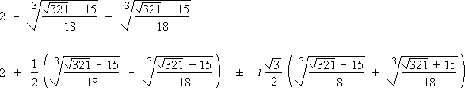

Solution to puzzle 79: Sum of fourth powers
The sum of three numbers is 6, the sum of their squares is 8, and the sum of their cubes is 5. What is the sum of their fourth powers?
Let the numbers be a, b, and c. Then we have
a + b + c = 6
a2 + b2 + c2 = 8
a3 + b3 + c3 = 5
We will find the (monic) cubic equation whose roots are a, b, and c.
If cubic equation x3 - Ax2 + Bx - C = 0 has roots a, b, c, then, expanding (x - a)(x - b)(x - c), we find
A = a + b + c
B = ab + bc + ca
C = abc
Then B = ab + bc + ca = ½ [(a + b + c)2 - (a2 + b2 + c2)] = 14.
Hence a, b, c are roots of x3 - 6x2 + 14x - C = 0, and we have
a3 - 6a2 + 14a - C = 0
b3 - 6b2 + 14b - C = 0
c3 - 6c2 + 14c - C = 0
Adding, we have (a3 + b3 + c3) - 6(a2 + b2 + c2) + 14(a + b + c) - 3C = 5 - 6×8 + 14×6 - 3C = 0.
Hence C = 41/3, and x3 - 6x2 + 14x - 41/3 = 0.
Multiplying the polynomial by x, we have x4 - 6x3 + 14x2 - 41x/3 = 0. Then
a4 - 6a3 + 14a2 - 41a/3 = 0
b4 - 6b3 + 14b2 - 41b/3 = 0
c4 - 6c3 + 14c2 - 41c/3 = 0
Adding, we have (a4 + b4 + c4) - 6(a3 + b3 + c3) + 14(a2 + b2 + c2) - 41(a + b + c)/3 = 0.
Hence a4 + b4 + c4 = 6×5 - 14×8 + (41/3)×6 = 0.
That is, the sum of the fourth powers of the numbers is 0.
Roots
Note that we did not need to actually calculate a, b, and c in order to determine the sum of their fourth powers. In fact, one of the numbers is real; the other two are complex conjugates; see below. The approximate values of the numbers are 2.67770, and 1.66115 ± 1.53116i.
Generalization
Using the above approach, we can show that if
a + b + c = r
a2 + b2 + c2 = s
a3 + b3 + c3 = t
then a, b, c are roots of x3 - rx2 + ½(r2 - s)x + (½r(3s - r2) - t)/3 = 0.
It then follows that
| a4 + b4 + c4 | = 4rt/3 - ½s(r2 - s) + r2(r2 - 3s)/6. |
| = (r4 - 6r2s + 3s2 + 8rt)/6. |
Recurrence Relation
Let f(n) = an + bn + cn, where n is a positive integer.
Then, given the equation x3 - 6x2 + 14x - 41/3 = 0, we can multiply by xn and sum over the three roots to yield the following recurrence relation:
f(n+3) = 6f(n+2) - 14f(n+1) + (41/3)f(n).
Successive application of this formula allows us to calculate a5 + b5 + c5, a6 + b6 + c6, and so on.
Further reading
- Polynomial Roots
- Sums of Powers in Terms of Symmetric Functions
- The Geometry of the Cubic Formula
- How to discover for yourself the solution of the cubic
Source: Traditional